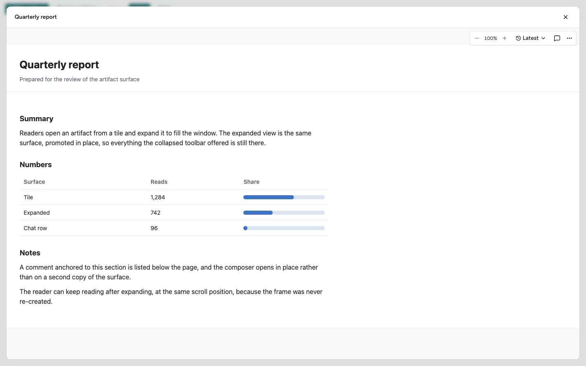
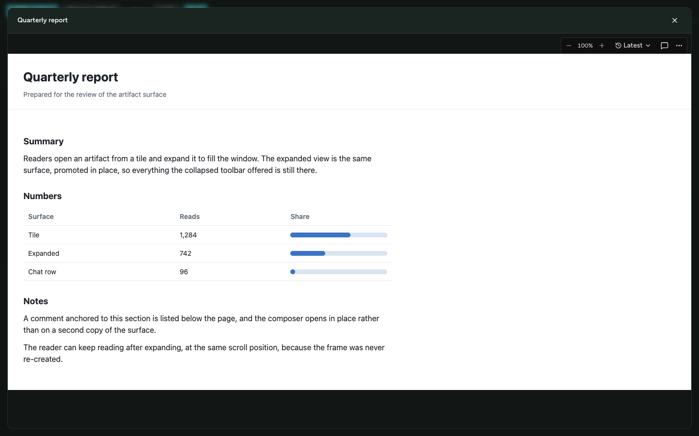
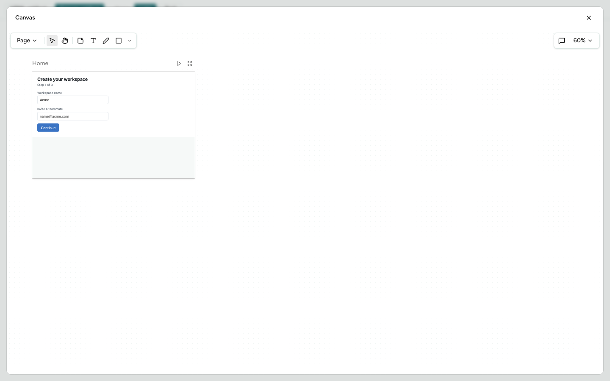
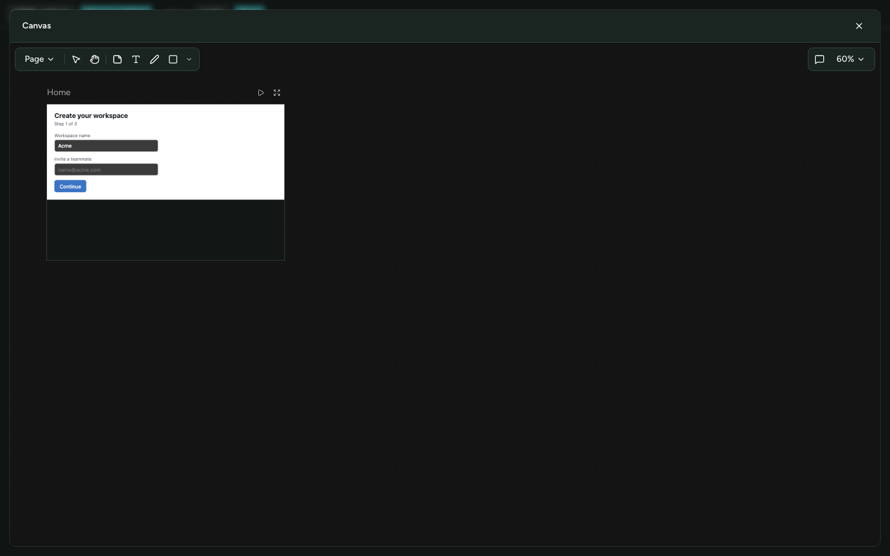
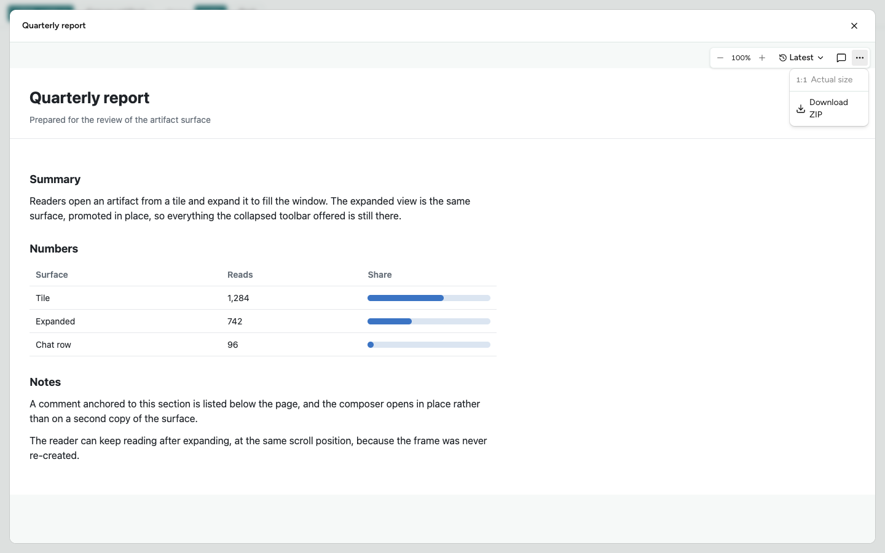
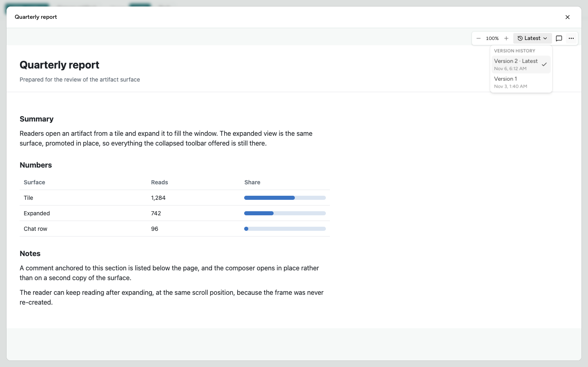
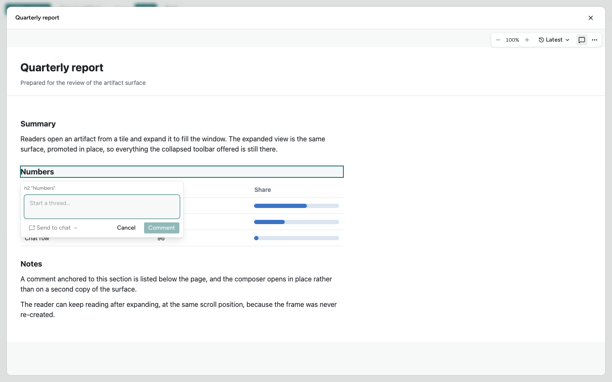

Expanded artifact parity — screens
The visual review for PR 3565. Expanding an artifact used to mount a second copy of the surface with its wiring cut; it now promotes the one live surface in place. These are the real surfaces, rendered from their real callers' composition, with the controls that used to be lost.
- Head
- 9f1f4e9a7
- Captured
- 8 Nov 2026, 16:45 UTC
- Viewport
- 1440 × 900
- Browser
- Chrome (Playwright)
What each control is, and where it is in the shot
| Control | Where it is | Shot |
|---|---|---|
| Version picker | Toolbar, reading Latest with the history glyph |
HTML light / dark, version menu |
| Comments | Toolbar, the speech-bubble toggle | HTML light / dark, comment draft |
| Download | “More actions” ▸ Download ZIP |
More actions |
| Zoom | Toolbar, − 100% +, with “Actual size” in the menu |
HTML light / dark, more actions |
| Comment composer | Anchored under the element, inside the raised surface | Comment draft |
| Canvas tools, Pages, zoom, comments | Canvas toolbar and the board's own Play / fullscreen controls | Canvas light / dark |
| Close | Title bar, right | Every shot |
Expand is deliberately absent in every shot: the button stands down while the surface is raised, because Close in the title bar is then the way out.
The four required screens




Supplementary screens
Three controls can only be seen once opened, so each is photographed open inside the raised surface.

Download ZIP is the real
download row; “Actual size” is disabled because the zoom is already
100%. The menu paints above the raised surface rather than under
it.

useEpicHtmlArtifactVersion hook: Version 2 · Latest is
checked, Version 1 is offered beneath it.

h2 "Numbers" anchor is outlined in the page, and the
composer is open inside the raised surface — the thing the second
copy used to drop.
Capture source and fidelity
A temporary capture fixture mounted the two surfaces with the composition their real callers give them. It has been removed from the checkout; its source is kept here. Nothing reached a real host or the cloud.
| Part | What it was in these shots |
|---|---|
| HTML surface |
The real HtmlArtifactCommentSurface, given the
toolbarControls and menuItems
ObjectArtifactTile gives it: the real
HtmlArtifactVersionPicker and the real
HtmlArtifactDownloadMenuItem.
|
| Version picker state |
The real useEpicHtmlArtifactVersion hook, over a
host that advertises epic.listHtmlArtifactVersions
and answers it — not a hand-built state object.
|
| Canvas surface |
The real CanvasArtifactSurface on its fixture
document, which is the real CanvasArtifactEditor
with a real Y.Doc and Awareness — the same way
canvas-selection.tsx mounts it.
|
| The document in the frame |
Really served: composed by ArtifactServer from a
manifest and a readSpan, fetched by the frame over
the artifact origin, and rendered in the sandboxed frame.
|
| Theme |
The app's own setTheme and
theme-applier — the shipped dark theme, not a
filter.
|
| Transport |
Mocked. MockHostMessenger and
MockRunnerHost answer the host RPCs, and the
artifact origin's requests are fulfilled from the page. This is
not live host or cloud integration.
|
| Download and Open-in-panel transport | Not exercised. The Download row is the real control and is enabled, but no ZIP was built and nothing was written to disk. |
| Artifact content | Written for the capture. The numbers in the report page are illustrative, not measurements. |
Visible defects
No defect found in the expanded surface. In both themes and on both surfaces the captured controls are legible and correctly placed, menus paint above the raised surface rather than under it, and the comment composer opens inside it. Four things a reader will notice are not defects:
- A strip of the page behind shows at the top edge of every shot. The surface insets itself by the safe-area gutter (1rem on a desktop viewport) and dims what is behind it, so the capture harness's own buttons are visible, blurred, above the title bar.
- A band below the document in the HTML shots. The report page is shorter than the panel; below its white body is the served page's own canvas, which takes the app theme — hence light in one shot and black in the other.
- The canvas board stays white in the dark shot while its fields go dark. That is the canvas injecting the theme into the board document, and is how the board renders unexpanded too.
- The comment composer overlaps the rows beneath its anchor. It is anchored under the element it belongs to; this is the composer's existing behaviour and not introduced by the promotion.
Two things these stills cannot show, and do not claim: the surface's
modality — top-layer promotion, inertness behind it, the Tab
cycle, Escape ordering — which the Playwright regressions in
browser-tests/artifact-expansion.spec.ts assert instead;
and Open in panel, which is a chat-row control
(artifact-row.tsx), not one the tile's toolbar renders.
The capture fixture
Three temporary files, uniquely named, added to this worktree for the
capture and removed afterwards. The tree is back to a clean
9f1f4e9a7 with no production edit, no install and no
commit. Their source is kept here as evidence:
Why a driver spec was needed, not just the fixture
An artifact's bytes are served to its frame from an origin the
native layer answers — the desktop scheme handler, or the
mobile app. In a plain browser tab nothing answers it, which is why
every artifact spec in browser-tests/ fulfils that
request itself. The in-app browser has no request routing, so it
could mount the surface but never load a real document. The capture
therefore ran under the same Playwright driver the regressions use,
against the same Vite fixture server, on an isolated port.